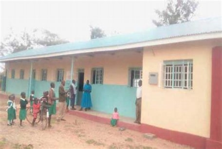
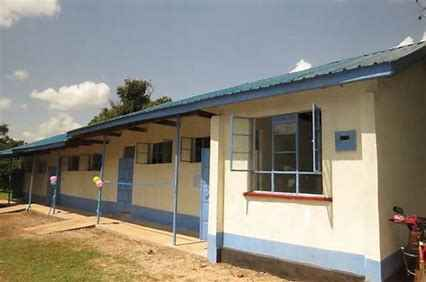

SIAYA TOWNSHIP PRIMARY SCHOOL
Siaya Township Primary School is an ordinary public educational institute in Siaya Township, Karemo, Kenya.
This school is managed / sponsored by central government and offers Kenya Certificate of Primary Education (KCPE).The Kenya Certificate of Primary Education which is controlled by the Kenya National Examination Council (KNEC) under Ministry of Education.
School Details
EDUCATIONAL INSTITUTE NAME ; Siaya Township Primary School
SPONSORED / MANAGED BY ; CENTRAL GOVERNMENT/DEB
STATUS ; Public School
INSTITUTION TYPE ; Ordinary, Day Only Schooling, Boys and Girls (co-education [co-ed] / mixed-gender education)
EDUCATION SYSTEM ; 8-4-4 (Eight years of primary education, Four years of secondary education and Four years of university education)
Here are some images of the school

